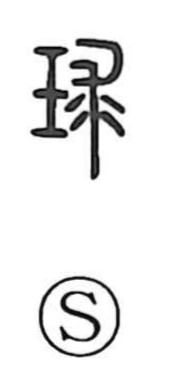

珠

Uncategorized
Kun: tama | On: shu
pearl ・ gem ・ jewel ・ bead
Explanation
A phono-semantic graph built from the jade element, indicating a precious stone, and 朱 as the phonetic. The 朱 component provides the reading shu and also suggests roundness and the vivid glow of vermilion, pointing to a lustrous, rounded stone. In origin it named a kind of jade and, by extension, came to signify a fine jewel—hence senses such as gem, pearl, and precious bead.